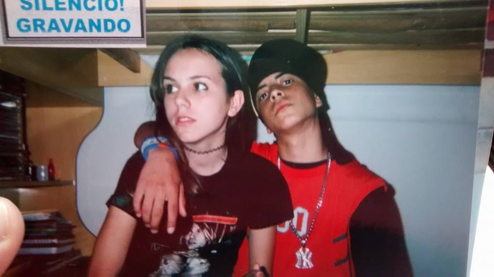
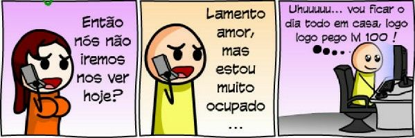
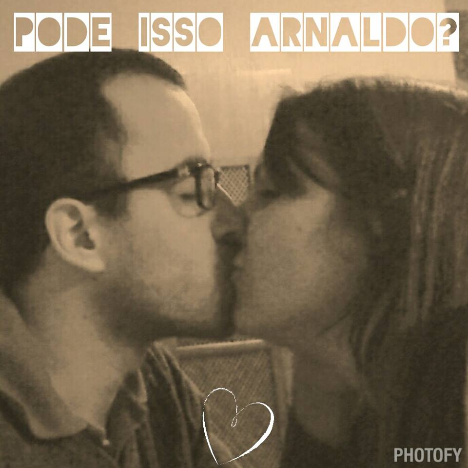
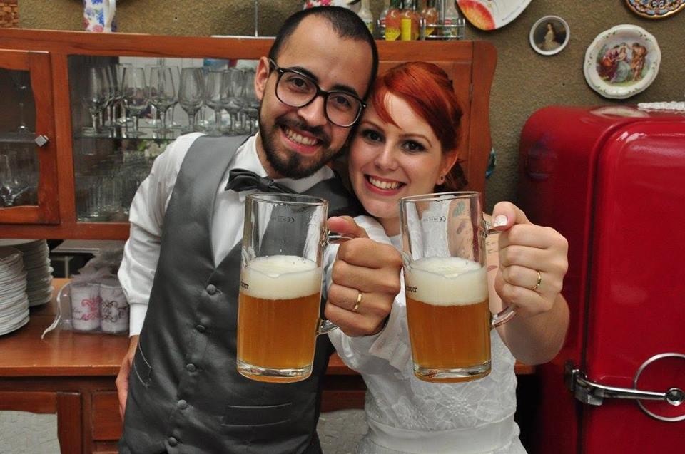

O começo
Nós nos conhecemos em 2004. Estudávamos na mesma escola e ele conseguiu, por intermédio de um amigo em comum, o meu msn, que na época éra muito usado. Me adicionou e começamos a conversar. Nos encontramos pessoalmente na escola e descobrimos que apesar de termos gostos e opiniões extremamente diferentes, gostávamos muito de estarmos na companhia um do outro. Nos intitulamos namorados durante mais ou menos um ano e meio. Éramos um casal mto lindo, diga-se de passagem rsrs.
A distancia
Após um ano e meio passando a maior parte do tempo juntos, nós terminamos. :( Ele estava viciado em crack, mentira! kkkk, ele estava viciado em Tibia! Sim, aquele joguinho dos Orshabaal e talz. Eu ja quase não o via, certa vez, liguei na casa dele, pedi pra sogra o chamar e se fosse possível estaria até agora esperando ele atender a ligação kkkk Ele devia estar ocupando demais fazendo alguma Quest sem graça, rsrs. Perdi o namorado para o Tibia. Me conformei e terminamos o namorico.
O reencontro
Anos depois, passados alguns relacionamentos conturbados tanto pra mim quanto pra ele, nos reencontramos. Mais uma vez via internet ***beijo pro cara que inventou essa porra S2***. Desta vez, usavamos o facebook. Marcávamos alguns encontros exporadicamente e tinhamos uma amizade muito bacana, tão bacana que quando percebi, estávamos apaixonadinhos. O mano brown do tibia passou por umas atualizações incríveis que me fez e me faz cair de amores a cada pensamento em relação a ele.
O casamento
O pedido foi feito repitidamente a cada manhã que acordávamos juntos sendo que em uma delas ele falou serio demais para que eu pudesse considerar como brincadeira. E não é que eu casei com o meu primeiro amor?!!! Foi um dos dias mais felizes da minha vida, o qual eu vivencío um tiquinho novamente a cada dia que desfruto da presença do meu mano brown do tibia versão 4.2.